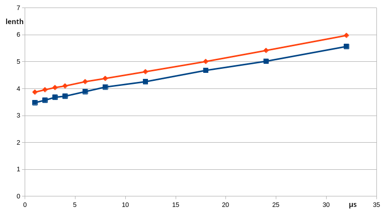
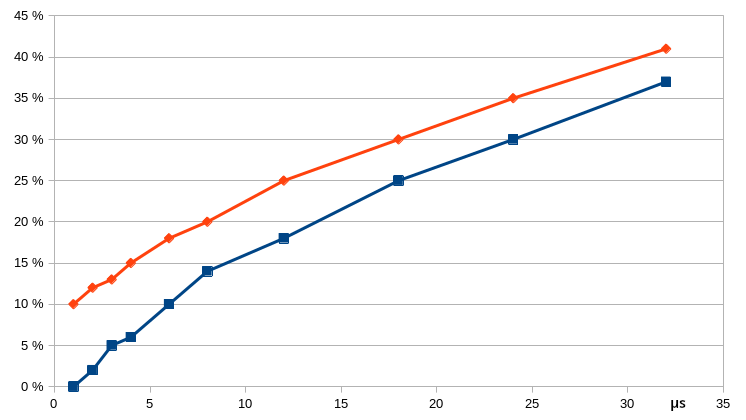

MMBasic creates and maintains variables on the fly, either with the first usage or when they are declared with DIM, CONST, LOCAL or STATIC.
Although, MMBasic uses a hash-table to accelerate finding variables, it still consumes time. And the length of the variable name has an influence. First, the hash value consideres each character of the name and then the name is compared with all ather names with the same hash value.
The time to find a single variable might be very short but if you use hundereds of variables in a program and in loops, they sum up to a reasonable part of program execution time.
The following data have been measured on an Color Maximite 2 G2 (480MHz) with firmware 5.07.01.
Test conditions: Variable table was filled with 55 variables between 1 and 32 characters of length. The time of 100.000 variable assignments were measured and the average time was taken. This reduced the influence of necessary overhead for the time measurement to an neglectable fraction.
With each variable length two runs were done. One with a variable name that has a unique first character and a second one with a variable name that starts with the same letter than at least 10 other variables.
The following table shows the measurements. The optimum is a single character variable that starts with an unique letter. The access time of 3.48 µs is the baseline for performance penalty reported in percent.
| Length | access time | penalty | 1 | 3.48 - 3.87 µs | 0 - 10% |
|---|---|---|
| 2 | 3.57 - 3.96 µs | 2 - 12% |
| 3 | 3.68 - 4,04 µs | 5 - 13% |
| 4 | 3.72 - 4.10 µs | 6 - 15% |
| 6 | 3.89 - 4.26 µs | 10 - 18% |
| Length | access time | penalty | 8 | 4.06 - 4.38 µs | 14 - 20% |
|---|---|---|
| 12 | 4.26 - 4,63 µs | 18 - 25% |
| 18 | 4.68 - 5.01 µs | 25 - 30% |
| 24 | 5.02 - 5.42 µs | 30 - 35% |
| 32 | 5.57 - 5.98 µs | 37 - 41% |
This chart shows the relationship between variable length and access time.The two lines show the tolerance range.

This chart show the relationship between variable length and performance drag as well with the tolerance band.

Let's have a look on the variable lengths in your program. The following histogram gives you an overview.
Local variables are only valid within a SUB or a FUNCTION and they are kept in a seperate list. See how your program make use of them.
Functions and sub-names are stored in a third list but handled the same way as variables. Good programming style is if function names describe what it is actually doing. This could be a trap in regards of performance, because long function names need more time to be called than short names.
The imortant thing is to keep a balance between readable code and performance optimisation. It does not make any sense to use one leter functions.